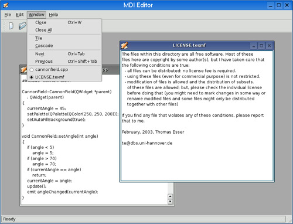
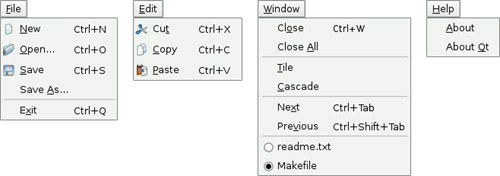

|
|
Applications that provide multiple documents within the main window's central area are called multiple document interface applications, or MDI applications. In Qt, an MDI application is created by using the QMdiArea class as the central widget and by making each document window a QMdiArea subwindow.
It is conventional for MDI applications to provide a Window menu that includes some commands for managing both the windows and the list of windows. The active window is identified with a checkmark. The user can make any window active by clicking its entry in the Window menu.
In this section, we will develop the MDI Editor application shown in Figure 6.16 to demonstrate how to create an MDI application and how to implement its Window menu. All the application's menus are shown in Figure 6.17.


The application consists of two classes: MainWindow and Editor. The code is supplied with the book's examples, and since most of it is the same or similar to the Spreadsheet application from Part I, we will present only the MDI-relevant code.
Let's start with the MainWindow class.
MainWindow::MainWindow()
{
mdiArea = new QMdiArea;
setCentralWidget(mdiArea);
connect(mdiArea, SIGNAL(subWindowActivated(QMdiSubWindow*)),
this, SLOT(updateActions()));
createActions();
createMenus();
createToolBars();
createStatusBar();
setWindowIcon(QPixmap(":/images/icon.png"));
setWindowTitle(tr("MDI Editor"));
QTimer::singleShot(0, this, SLOT(loadFiles()));
}
In the MainWindow constructor, we create a QMdiArea widget and make it the central widget. We connect the QMdiArea's subWindowActivated() signal to the slot we will use to keep the window menu up-to-date, and where we ensure that actions are enabled or disabled depending on the application's state.
At the end of the constructor, we set a single-shot timer with a 0-millisecond interval to call the loadFiles() function. Such timers time out as soon as the event loop is idle. In practice, this means that the constructor will finish, and then after the main window has been shown, loadFiles() will be called. If we did not do this and there were a lot of large files to load, the constructor would not finish until all the files were loaded, and meanwhile, the user would not see anything on-screen and might think that the application had failed to start.
void MainWindow::loadFiles()
{
QStringList args = QApplication::arguments();
args.removeFirst();
if (!args.isEmpty()) {
foreach (QString arg, args)
openFile(arg);
mdiArea->cascadeSubWindows();
} else {
newFile();
}
mdiArea->activateNextSubWindow();
}
If the user started the application with one or more file names on the command line, this function attempts to load each file and at the end cascades the subwindows so that the user can easily see them. Qt-specific command-line options, such as -style and -font, are automatically removed from the argument list by the QApplication constructor. So, if we write
mdieditor -style motif readme.txt
on the command line, QApplication::arguments() returns a QStringList containing two items ("mdieditor" and "readme.txt"), and the MDI Editor application starts up with the document readme.txt.
If no file is specified on the command line, a single new empty editor subwindow is created so that the user can start typing straight away. The call to activateNextSubWindow() means that an editor window is given the focus, and ensures that the updateActions() function is called to update the Window menu and enable and disable actions according to the application's state.
void MainWindow::newFile()
{
Editor *editor = new Editor;
editor->newFile();
addEditor(editor);
}
The newFile() slot corresponds to the File|New menu option. It creates an Editor widget and passes it on to the addEditor() private function.
void MainWindow::open()
{
Editor *editor = Editor::open(this);
if (editor)
addEditor(editor);
}
The open() function corresponds to File|Open. It calls the static Editor::open() function, which pops up a file dialog. If the user chooses a file, a new Editor is created, the file's text is read in, and if the read is successful, a pointer to the Editor is returned. If the user cancels the file dialog, or if the reading fails, a null pointer is returned and the user is notified of the error. It makes more sense to implement the file operations in the Editor class than in the MainWindow class, because each Editor needs to maintain its own independent state.
void MainWindow::addEditor(Editor *editor)
{
connect(editor, SIGNAL(copyAvailable(bool)),
cutAction, SLOT(setEnabled(bool)));
connect(editor, SIGNAL(copyAvailable(bool)),
copyAction, SLOT(setEnabled(bool)));
QMdiSubWindow *subWindow = mdiArea->addSubWindow(editor);
windowMenu->addAction(editor->windowMenuAction());
windowActionGroup->addAction(editor->windowMenuAction());
subWindow->show();
}
The addEditor() private function is called from newFile() and open() to complete the initialization of a new Editor widget. It starts by establishing two signal–slot connections. These connections ensure that Edit|Cut and Edit|Copy are enabled or disabled depending on whether there is any selected text.
Because we are using MDI, it is possible that multiple Editor widgets will be in use. This is a concern since we are only interested in responding to the copyAvailable(bool) signal from the active Editor window, not from the others. But these signals can only ever be emitted by the active window, so this isn't a problem in practice.
The QMdiArea::addSubWindow() function creates a new QMdiSubWindow, puts the widget it is passed as a parameter inside the subwindow, and returns the subwindow. Next, we create a QAction representing the window to the Window menu. The action is provided by the Editor class, which we will cover in a moment. We also add the action to a QActionGroup object. The QActionGroup ensures that only one Window menu item is checked at a time. Finally, we call show() on the new QMdiSubWindow to make it visible.
void MainWindow::save()
{
if (activeEditor())
activeEditor()->save();
}
The save() slot calls Editor::save() on the active editor, if there is one. Again, the code that performs the real work is located in the Editor class.
Editor *MainWindow::activeEditor()
{
QMdiSubWindow *subWindow = mdiArea->activeSubWindow();
if (subWindow)
return qobject_cast<Editor *>(subWindow->widget());
return 0;
}
The activeEditor() private function returns the widget held inside the active subwindow as an Editor pointer, or a null pointer if there isn't an active subwindow.
void MainWindow::cut()
{
if (activeEditor())
activeEditor()->cut();
}
The cut() slot calls Editor::cut() on the active editor. We don't show the copy() and paste() slots because they follow the same pattern.
void MainWindow::updateActions()
{
bool hasEditor = (activeEditor() != 0);
bool hasSelection = activeEditor()
&& activeEditor()->textCursor().hasSelection();
saveAction->setEnabled(hasEditor);
saveAsAction->setEnabled(hasEditor);
cutAction->setEnabled(hasSelection);
copyAction->setEnabled(hasSelection);
pasteAction->setEnabled(hasEditor);
closeAction->setEnabled(hasEditor);
closeAllAction->setEnabled(hasEditor);
tileAction->setEnabled(hasEditor);
cascadeAction->setEnabled(hasEditor);
nextAction->setEnabled(hasEditor);
previousAction->setEnabled(hasEditor);
separatorAction->setVisible(hasEditor);
if (activeEditor())
activeEditor()->windowMenuAction()->setChecked(true);
}
The subWindowActivated() signal is emitted every time a new subwindow becomes activated, and when the last subwindow is closed (in which case, its parameter is a null pointer). This signal is connected to the updateActions() slot.
Most menu options make sense only if there is an active window, so we disable them if there isn't one. At the end, we call setChecked() on the QAction representing the active window. Thanks to the QActionGroup, we don't need to explicitly uncheck the previously active window.
void MainWindow::createMenus()
{
...
windowMenu = menuBar()->addMenu(tr("&Window"));
windowMenu->addAction(closeAction);
windowMenu->addAction(closeAllAction);
windowMenu->addSeparator();
windowMenu->addAction(tileAction);
windowMenu->addAction(cascadeAction);
windowMenu->addSeparator();
windowMenu->addAction(nextAction);
windowMenu->addAction(previousAction);
windowMenu->addAction(separatorAction);
...
}
The createMenus() private function populates the Window menu with actions. All the actions are typical of such menus and are easily implemented using QMdiArea's closeActiveSubWindow(), closeAllSubWindows(), tileSubWindows(), and cascadeSubWindows() slots. Every time the user opens a new window, it is added to the Window menu's list of actions. (This is done in the addEditor() function that we saw on page 160.) When the user closes an editor window, its action in the Window menu is deleted (since the action is owned by the editor window), and so the action is automatically removed from the Window menu.
void MainWindow::closeEvent(QCloseEvent *event)
{
mdiArea->closeAllSubWindows();
if (!mdiArea->subWindowList().isEmpty()) {
event->ignore();
} else {
event->accept();
}
}
The closeEvent() function is reimplemented to close all subwindows, causing each subwindow to receive a close event. If one of the subwindows "ignores" its close event (because the user canceled an "unsaved changes" message box), we ignore the close event for the MainWindow; otherwise, we accept it, resulting in Qt closing the entire application. If we didn't reimplement closeEvent() in MainWindow, the user would not be given the opportunity to save unsaved changes.
We have now finished our review of MainWindow, so we can move on to the Editor implementation. The Editor class represents one subwindow. It is derived from QTextEdit, which provides the text editing functionality. In a real-world application, if a code editing component is required, we might also consider using Scintilla, available for Qt as QScintilla from http://www.riverbankcomputing.co.uk/qscintilla/.
Just as any Qt widget can be used as a stand-alone window, any Qt widget can be put inside a QMdiSubWindow and used as a subwindow in an MDI area.
Here's the class definition:
class Editor : public QTextEdit
{
Q_OBJECT
public:
Editor(QWidget *parent = 0);
void newFile();
bool save();
bool saveAs();
QSize sizeHint() const;
QAction *windowMenuAction() const { return action; }
static Editor *open(QWidget *parent = 0);
static Editor *openFile(const QString &fileName,
QWidget *parent = 0);
protected:
void closeEvent(QCloseEvent *event);
private slots:
void documentWasModified();
private:
bool okToContinue();
bool saveFile(const QString &fileName);
void setCurrentFile(const QString &fileName);
bool readFile(const QString &fileName);
bool writeFile(const QString &fileName);
QString strippedName(const QString &fullFileName);
QString curFile;
bool isUntitled;
QAction *action;
};
Four of the private functions that were in the Spreadsheet application's MainWindow class (p. 59) are also present in the Editor class: okToContinue(), saveFile(), setCurrentFile(), and strippedName().
Editor::Editor(QWidget *parent)
: QTextEdit(parent)
{
action = new QAction(this);
action->setCheckable(true);
connect(action, SIGNAL(triggered()), this, SLOT(show()));
connect(action, SIGNAL(triggered()), this, SLOT(setFocus()));
isUntitled = true;
connect(document(), SIGNAL(contentsChanged()),
this, SLOT(documentWasModified()));
setWindowIcon(QPixmap(":/images/document.png"));
setWindowTitle("[*]");
setAttribute(Qt::WA_DeleteOnClose);
}
First, we create a QAction representing the editor in the application's Window menu and connect that action to the show() and setFocus() slots.
Since we allow users to create any number of editor windows, we must make some provision for naming them so that they can be distinguished before they have been saved for the first time. One common way of handling this is to allocate names that include a number (e.g., document1.txt). We use the isUntitled variable to distinguish between names supplied by the user and names we have created programmatically.
We connect the text document's contentsChanged() signal to the private documentWasModified() slot. This slot simply calls setWindowModified(true).
Finally, we set the Qt::WA_DeleteOnClose attribute to prevent memory leaks when the user closes an Editor window.
void Editor::newFile()
{
static int documentNumber = 1;
curFile = tr("document%1.txt").arg(documentNumber);
setWindowTitle(curFile + "[*]");
action->setText(curFile);
isUntitled = true;
++documentNumber;
}
The newFile() function generates a name like document1.txt for the new document. The code belongs in newFile(), rather than the constructor, because we don't want to consume numbers when we call open() to open an existing document in a newly created Editor. Since documentNumber is declared static, it is shared across all Editor instances.
The "[*]" marker in the window title is a place marker for where we want the asterisk to appear when the file has unsaved changes on platforms other than Mac OS X. On Mac OS X, unsaved documents have a dot in their window's close button. We covered this place marker in Chapter 3 (p. 61).
In addition to creating new files, users often want to open existing files, picked from either a file dialog or a list such as a recently opened files list. Two static functions are provided to support these uses: open() for choosing a file name from the file system, and openFile() to create an Editor and to read into it the contents of a specified file.
Editor *Editor::open(QWidget *parent)
{
QString fileName =
QFileDialog::getOpenFileName(parent, tr("Open"), ".");
if (fileName.isEmpty())
return 0;
return openFile(fileName, parent);
}
The static open() function pops up a file dialog through which the user can choose a file. If a file is chosen, openFile() is called to create an Editor and to read in the file's contents.
Editor *Editor::openFile(const QString &fileName, QWidget *parent)
{
Editor *editor = new Editor(parent);
if (editor->readFile(fileName)) {
editor->setCurrentFile(fileName);
return editor;
} else {
delete editor;
return 0;
}
}
This static function begins by creating a new Editor widget, and then attempts to read in the specified file. If the read is successful, the Editor is returned; otherwise, the user is informed of the problem (in readFile()), the editor is deleted, and a null pointer is returned.
bool Editor::save()
{
if (isUntitled) {
return saveAs();
} else {
return saveFile(curFile);
}
}
The save() function uses the isUntitled variable to determine whether it should call saveFile() or saveAs().
void Editor::closeEvent(QCloseEvent *event)
{
if (okToContinue()) {
event->accept();
} else {
event->ignore();
}
}
The closeEvent() function is reimplemented to allow the user to save unsaved changes. The logic is coded in the okToContinue() function, which pops up a message box that asks, "Do you want to save your changes?" If okToContinue() returns true, we accept the close event; otherwise, we "ignore" it and leave the window unaffected by it.
void Editor::setCurrentFile(const QString &fileName)
{
curFile = fileName;
isUntitled = false;
action->setText(strippedName(curFile));
document()->setModified(false);
setWindowTitle(strippedName(curFile) + "[*]");
setWindowModified(false);
}
The setCurrentFile() function is called from openFile() and saveFile() to update the curFile and isUntitled variables, to set the window title and action text, and to set the document's "modified" flag to false. Whenever the user modifies the text in the editor, the underlying QTextDocument emits the contentsChanged() signal and sets its internal "modified" flag to true.
QSize Editor::sizeHint() const
{
return QSize(72 * fontMetrics().width('x'),
25 * fontMetrics().lineSpacing());
}
Finally, the sizeHint() function returns a size based on the width of the letter 'x' and the height of a text line. QMdiArea uses the size hint to give an initial size to the window.
MDI is one way of handling multiple documents simultaneously. On Mac OS X, the preferred approach is to use multiple top-level windows. We covered this approach in the "Multiple Documents" section of Chapter 3.
|
|
| Converted from CHM to HTML with chm2web Pro 2.85 (unicode) |